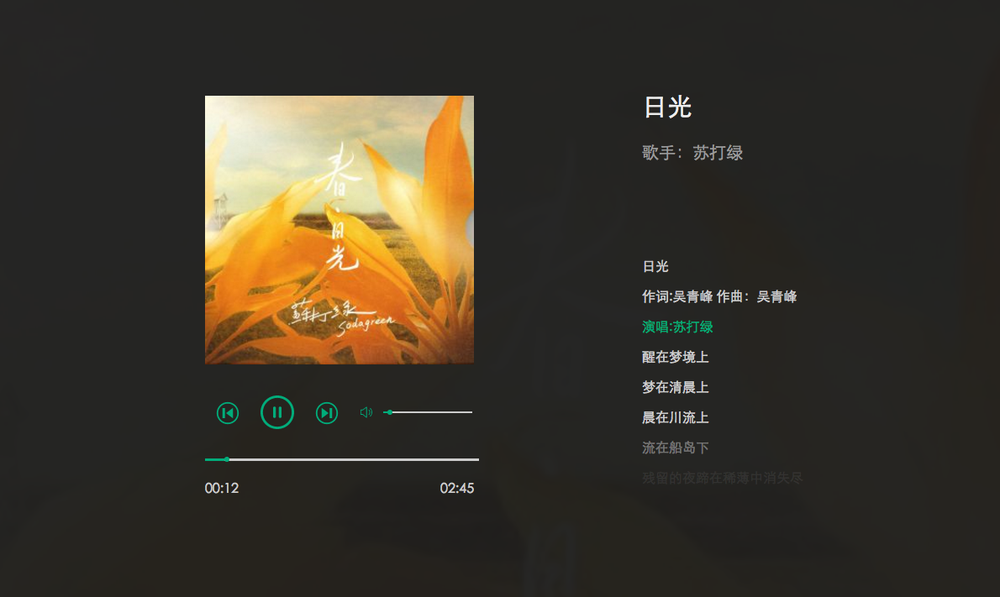
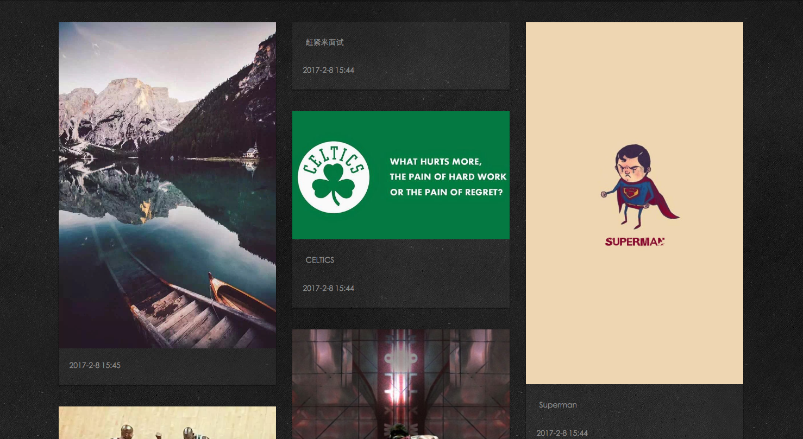

基于 Vue 的音乐播放器预览

-
使用技术：
Vue、 Webpack、 JS、 AJAX、 HTML5
-
项目描述：
可以进行歌曲的暂停与播放，对歌曲的播放进度进行调节，并对歌词进行同步。播放上一首或者下一首时，获取的都是随机歌曲。可以进行音量的控制，满足一个基本的音乐播放器的功能。
-
实现细节：
通过 HTML5 的 audio 标签，可以将音频嵌入到 HTML 中，并通过该标签提供的一些属性和方法，可以实现开始、暂停以及对音量进行调节等功能。歌词同步可以根据当前播放的进度与歌词的时间戳来实现。将歌词放入数组中，通过 vue 的 v-for 将数组中的内容渲染到页面上，需要改变页面上的歌词时，只需要将数组的内容改变即可。
基于 Vue 的照片墙预览

-
使用技术：
Vue、 Webpack、 JS、 LeanCloud
-
项目描述：
可以通过上传图片，以及发表文字，对页面的内容进行添加。
-
实现细节：
阅读 leanCloud 的文档，通过使用 leanCloud 提供的js api，实现登陆 以及注册功能，这样便不需要通过后台来实现。注册/登陆后，可以上传图片以及写上一段对应的文字，在刷新页面 或者 重新登录后，内容不会消失。 通过原生 js 对图片以及对应文字实现瀑布流布局，看起来比较美观。
擅长技术
-
HTML
-
CSS
-
Javascript
-
jQuery
- HTML/HTML5
- CSS/CSS3
- Vue
- Ajax
- Requirejs
- JSONP/CORS
- jQuery
- webpack
- Git
- Linux
- 熟练使用 HTML、CSS、JS、jQuery 等主流技术进行开发。
- 熟练使用 jQuery、 requirejs 等主流库，了解一些主流框架如 Vue。
- 理解关于跨域的内容，如 JSONP、 CORS。
- 了解常见的布局，知道盒模型，浮动定位以及 BFC 等特性。
- 了解 Vue 的使用，可以通过 webpack 进行简单的配置工作来开始Vue项的开发。
- 了解 Linux 命令行，可以通过 git 进行简单的提交工作。
- 了解 HTML5、 CSS3，有实现简单效果的经验。
工作经历
2016.7 至 2016.12
深圳市骏龙电子有限公司北京分公司
工作岗位：AE（应用工程师）
主要职责：主要负责给乐视TV维护 MCU 代码，协调 BSP 组与硬件之间的调试工作